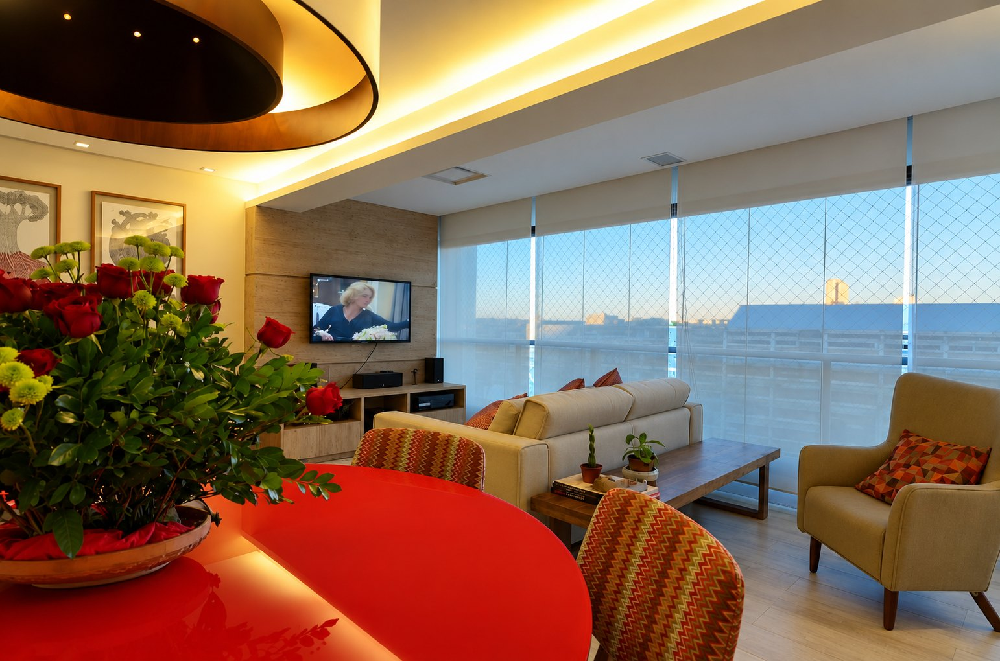
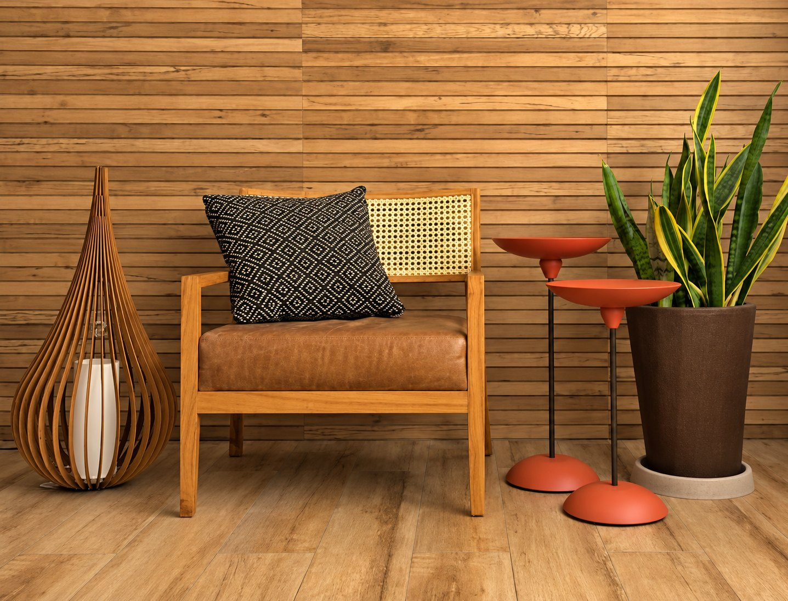
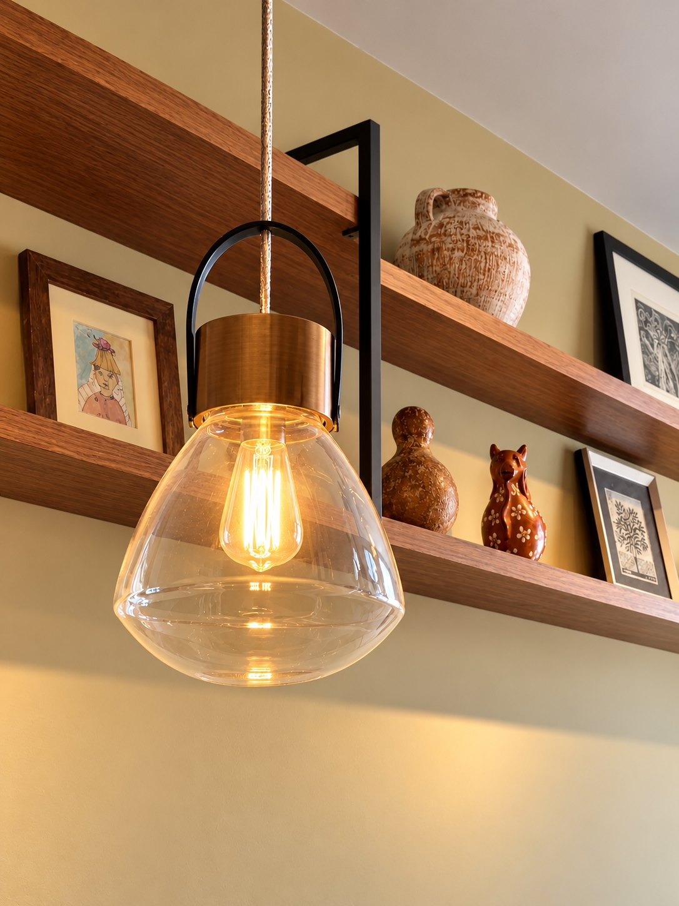
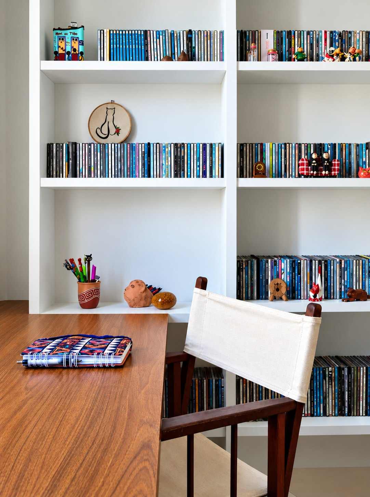
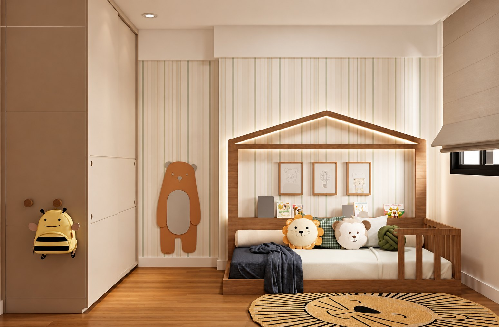
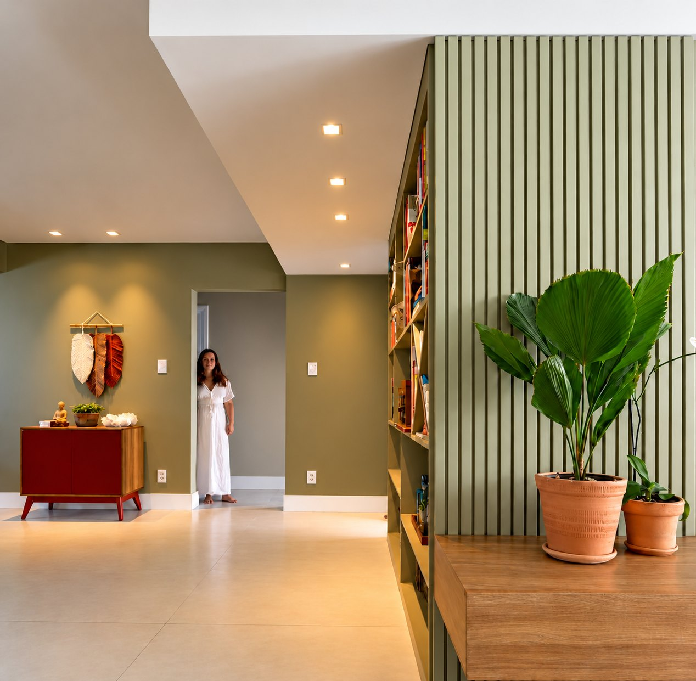
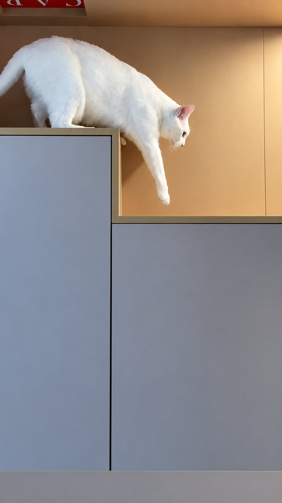
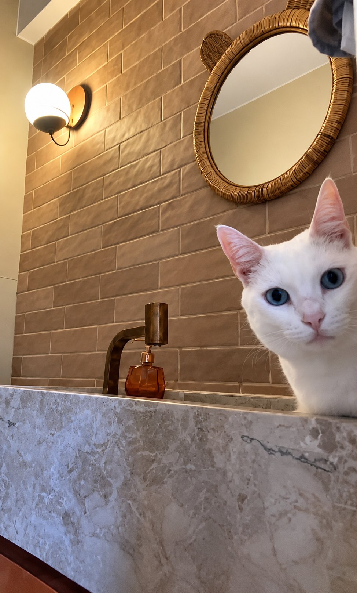

Paralela, Salvador
Apartamento Paralela
A sala e o jantar juntos, com a mesa vermelha diante da vista.
Ver projeto
Arquiteta em Salvador
Débora Reis, arquiteta em Salvador. Projetos de interiores para casas e apartamentos, pensados a partir de quem mora ali.
Depois de tantos anos projetando casas, sempre me perguntam:
“Você não enjoa?”
Cada casa começa pelas pessoas que vivem nela. Seus livros, suas memórias, seus objetos, seus bichos e tudo aquilo que faz a casa ter a cara de quem mora ali.
Conheça a arquiteta

A mistura de livros e peças feitas à mão dá personalidade ao espaço.Ver o projeto

Paralela, Salvador
A sala e o jantar juntos, com a mesa vermelha diante da vista.
Ver projeto
Graça, Salvador
Os CDs, os livros e o artesanato das proprietárias, guardados à vista.
Ver projetoAlto do Parque, Salvador
Madeira, palhinha e luz quente dão personalidade aos ambientes.
Ver projeto
Itaigara, Salvador
Um quarto pensado para brincar e descansar, com a cama casinha e a tenda.
Ver projeto
Rio Vermelho, Salvador
Piso, cores, marcenaria e luz novos, pensados para as moradoras.
Ver projeto[ Projetos ]
[ Como trabalho ]
01
medição em até 5 dias úteis
Você responde ao briefing, contando como vive e o que quer mudar. Depois eu faço a medição e registro o espaço.
02
até 24 dias úteis
A primeira proposta para a casa: o layout e as ideias.
03
até 30 dias úteis
O projeto ganha forma. É nesta etapa que refinamos e ajustamos.
04
até 30 dias úteis
Preparo os desenhos técnicos que a obra segue, com os detalhes de marcenaria, bancadas, iluminação e acabamentos, e os quantitativos e custos previstos.

[ Pra quem mora ]
Quem tem bicho em casa sabe que ele também mora ali. O projeto pode pensar no lugar dele desde o começo: aqui, a estante virou caminho e brincadeira para os gatos.

[ A arquiteta ]
Arquiteta e urbanista formada pela UFBA em 2004, com escritório na Barra, em Salvador.
“Quando me formei, em 2004, eu imaginava que minha profissão seria feita de projetos. Com o tempo descobri que ela é feita de encontros. Depois de mais de duas décadas de atuação, continuo desenhando casas, mas, principalmente, continuo aprendendo sobre pessoas.”
[ Perguntas ]
A obra fica com a equipe que você contratar, e eu posso indicar uma. Se você quiser, apresento orçamentos de empresas de obra para ajudar na escolha e, quando combinamos, faço visitas como arquiteta para conferir se a obra segue o projeto.
Os ajustes entram no anteprojeto: cada pedido de mudança leva 5 dias úteis por ambiente. Se o projeto mudar no detalhamento, a gente renegocia.
As pranchas impressas em A3, coloridas: imagens 3D, planta de layout, planta cotada, pontos elétricos, iluminação, forro, paginação de revestimentos (se precisar), elevações das paredes com os acabamentos, marcenaria, bancadas de pedra, quantitativos e orçamentos.
O valor depende das características do imóvel, dos ambientes envolvidos e das etapas que você deseja contratar. Depois da nossa primeira conversa, preparo uma proposta com o escopo do trabalho, os honorários e as condições de pagamento.
[ Contato ]
A conversa é pelo WhatsApp, com a própria Débora. Se puder, conte o bairro, o tipo e o tamanho do imóvel e quais ambientes você gostaria de transformar.